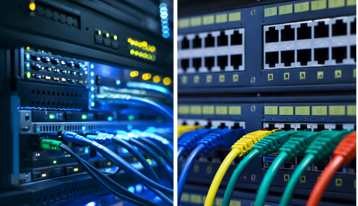

Mijn portfolio
Hieronder vind je een overzicht van 6 projecten.

Project 2
Linux server met netwerkdiensten.
Binnenkort beschikbaar
Project 3
Windows Server en Active Directory.
Binnenkort beschikbaar
Project 4
Firewall en basis security configuratie.
Binnenkort beschikbaar
Project 5
Webproject met HTML, CSS en responsief design.
Binnenkort beschikbaar
Project 6
Cloud en virtualisatie in een testomgeving.
Binnenkort beschikbaar